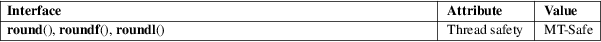

round, roundf, roundl − round to nearest integer, away from zero
Math library (libm, −lm)
#include <math.h>
double
round(double x);
float roundf(float x);
long double roundl(long double x);
Feature Test Macro Requirements for glibc (see feature_test_macros(7)):
round(),
roundf(), roundl():
_ISOC99_SOURCE || _POSIX_C_SOURCE >= 200112L
These functions round x to the nearest integer, but round halfway cases away from zero (regardless of the current rounding direction, see fenv(3)), instead of to the nearest even integer like rint(3).
For example, round(0.5) is 1.0, and round(−0.5) is −1.0.
These functions return the rounded integer value.
If x is integral, +0, −0, NaN, or infinite, x itself is returned.
No errors occur. POSIX.1-2001 documents a range error for overflows, but see NOTES.
For an explanation of the terms used in this section, see attributes(7).

C11, POSIX.1-2008.
glibc 2.1. C99, POSIX.1-2001.
POSIX.1-2001 contains text about overflow (which might set errno to ERANGE, or raise an FE_OVERFLOW exception). In practice, the result cannot overflow on any current machine, so this error-handling stuff is just nonsense. (More precisely, overflow can happen only when the maximum value of the exponent is smaller than the number of mantissa bits. For the IEEE-754 standard 32-bit and 64-bit floating-point numbers the maximum value of the exponent is 127 (respectively, 1023), and the number of mantissa bits including the implicit bit is 24 (respectively, 53).)
If you want to store the rounded value in an integer type, you probably want to use one of the functions described in lround(3) instead.
ceil(3), floor(3), lround(3), nearbyint(3), rint(3), trunc(3)